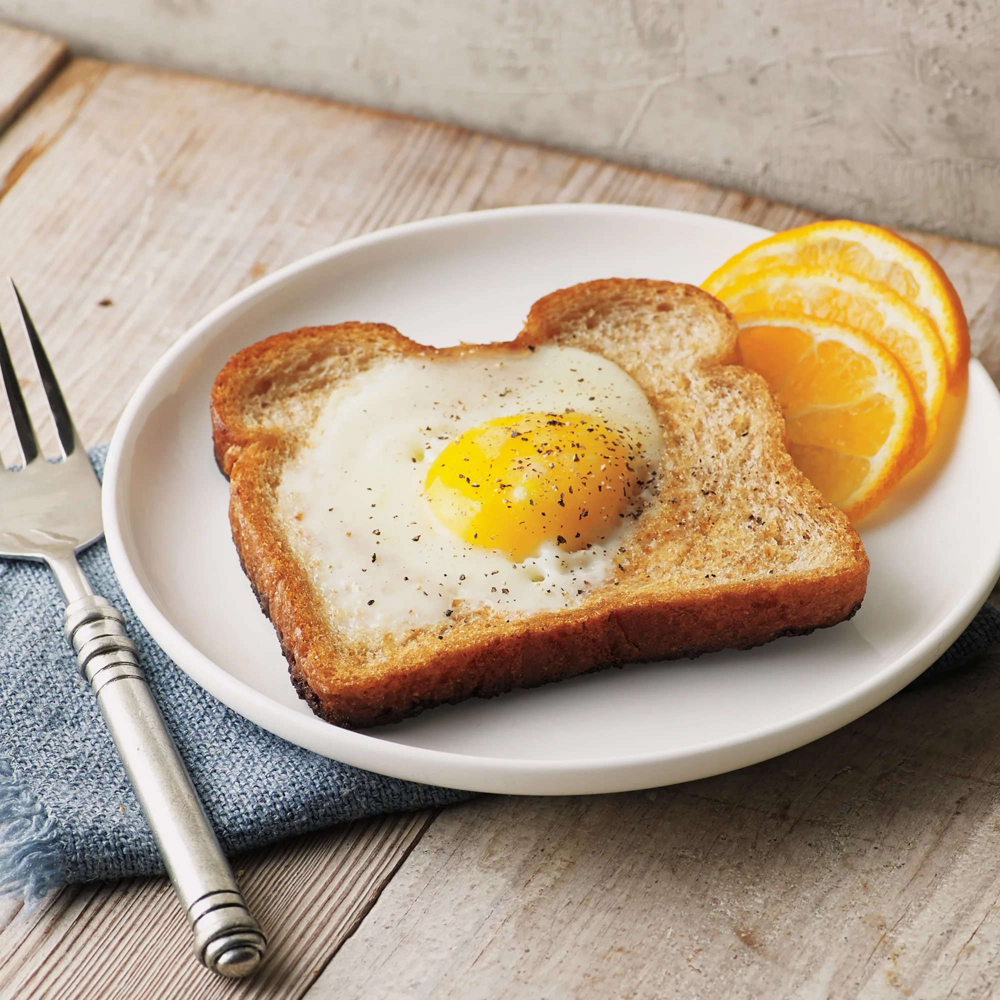

Eggs on toast

Description
There is nothing more iconic (and simple!) to make for breakfast than eggs on toast. This nutrient dense meal can be made in less than 5 minutes.
Ingredients
- 2 Eggs
- 1 tbsp salted butter
- Extra virgin olive oil
- 1 slice of bread
- Ground pepper
- Garlic powder
- Ground turmeric
Steps
- Put a small, nonstick pan on medium heat
- Melt the butter and a small drizzle of olive oil together in the pan
- Crack the eggs gently into the pan, taking care to not break the yolks
- Add your sprinkling of pepper, garlic, and turmeric to your taste
- Once the bottom of the eggs whites have completely set (opaque and not see through), gently flip the eggs with a spatula, taking care again to not break the yolks
- Allow the yolk side to cook for 30 seconds to 1 minute, to desired yolk consistency(I prefer mine slightly set on the outside but runny on the inside)
- Remove the cooked eggs from the pan an onto a plate to rest
- Add your bread to the still hot pan, allowing it to soak up the remaining oil and butter
- Once the now buttered bread is crispy and toasted on both sides, plate your eggs on to the toast and enjoy!